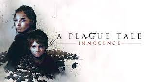
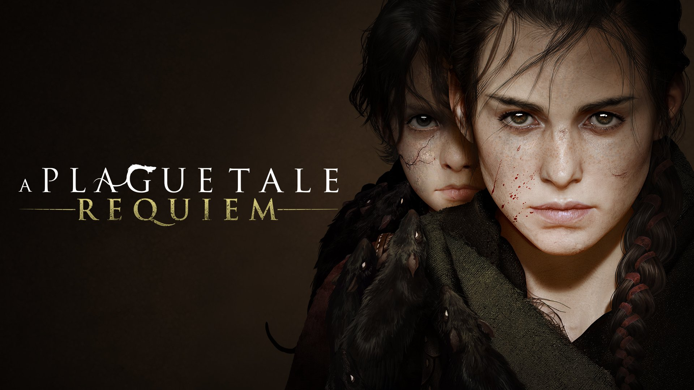
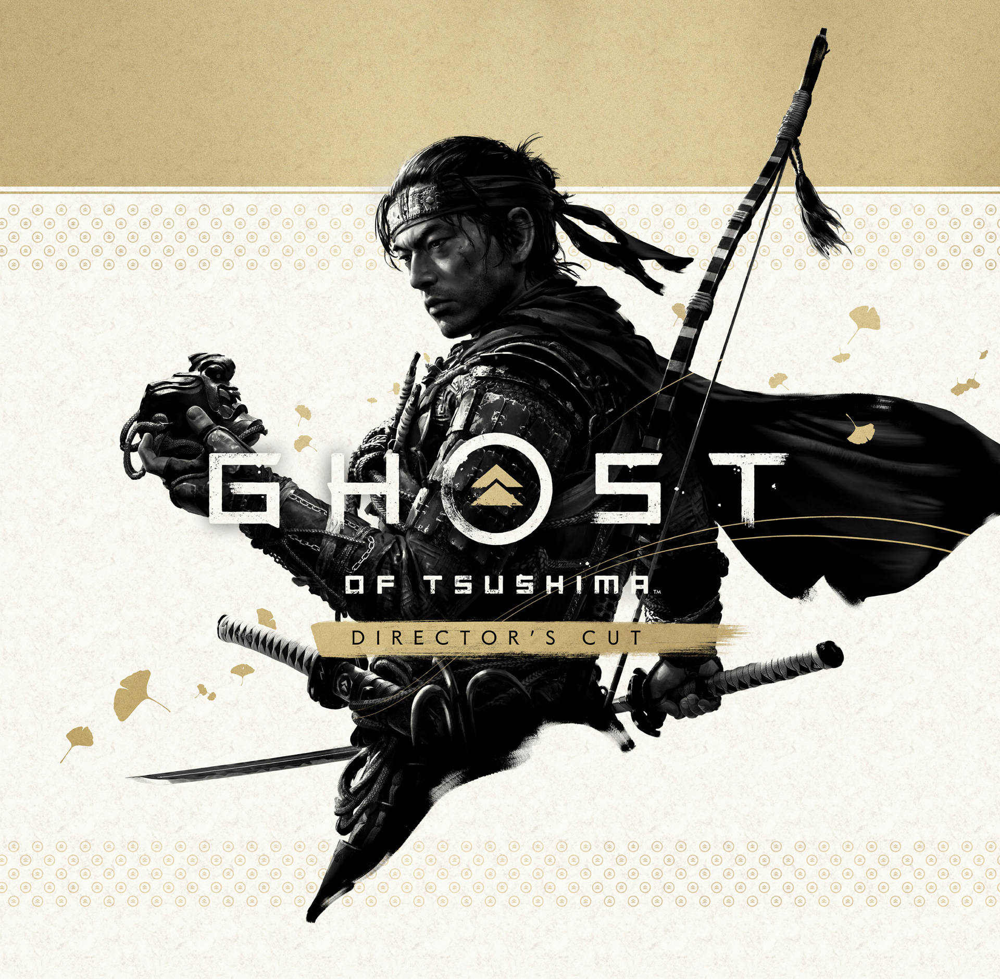
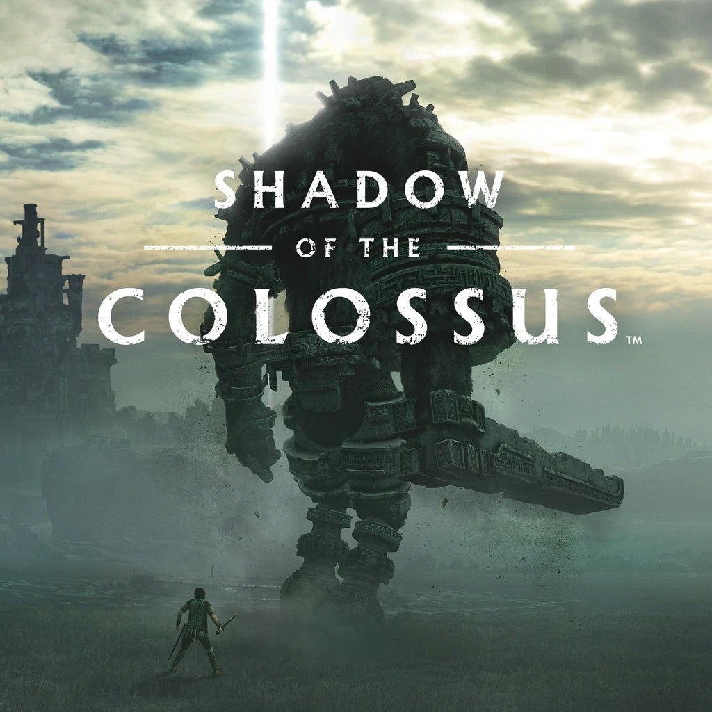
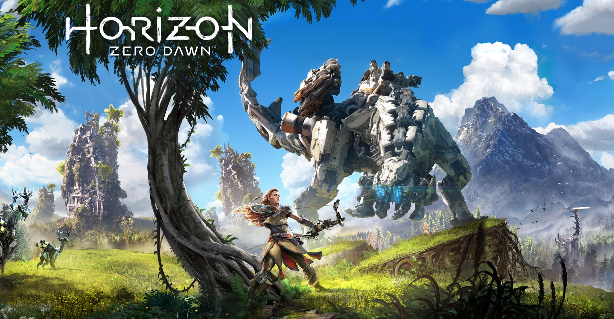

This genre of games explore story telling naratives
meant to provoke the players feelings good or bad.
These types of games can also just be fun to play
as if you get to play an interactive movie or book in real time.Action-Action-Adventure games are hit or miss for certain people
however I do think everyone should at try to find one to play
because there most likely is a story for everyone.
A Plague Tale: Innocence/Requiem


Release Date: May 14, 2019 (1st game), October 17, 2022 (2nd game) Rating: 9/10 (1st game), 9/10 (2nd game) While many games are set in unrealistic environments like outer space or
alternate realities, some games take us to historical periods in the past.
A Plague Tale: Innocence takes place in the middle of the Hundred Years'
War between England and France. By controlling 15-year-old Amicia de Rune,
players must stealthfully avoid enemies as Amicia and her sickened brother
Hugo try to escape French soldiers and infected rats of the black plague.A Plague Tale: Innocence launched in 2019 on all major platforms and was
met with an overwhelmingly positive reception, as well as winning
Best Narrative at The Game Awards that year. A Plague Tale: Requiem
launched in 2022 and continued the harrowing tale of the de Rune siblings
and their hopes of surviving against the Order.
Ghost Of Tsushima

Release Date: July 17, 2020 Rating: 9/10 Ghost of Tsushima was an incredible tale of sacrifice.
Controlling Jin Sakai, Sucker Punch Productions forced you
to truly think about whether or not the ends justified the
means in trying to stave off the ensuing Mongol invasion.
In battling the Mongols, Sakai is faced with decisions that
will ultimately save his people, but damage his legacy
and honor in the process.Ghost of Tsushima has stunning set pieces that change
throughout your playthrough. Many different sets of armor
can be obtained that will alter Sakai’s appearance, as well
as affect his attributes. Ghost of Tsushima received several
accolades, including Game of the Year honors at the Tokyo Game Show.
Stray
Release Date: July 19, 2022 Rating: 8/10 If you've ever wondered how it feels to be a cat,
then Stray is the perfect game for you. Taking place in
an apocalyptic setting, you control a curious kitty that
gets separated from its pack and is lost in the depths of the world.The human race is seemingly extinct, as the main population
in the ruins of Walled City 99 are robots called Companions.
With the help of an A.I. named B-12, you must figure out how to
open the enclosed city and return to the surface world.
Shadow Of The Colossus

Release Date: October 18, 2005 Rating: 9.5/10 Shadow of the Colossus follows a young man named
Wander on a quest to bring a girl named Mono back to life.
Wander must travel throughout the Forbidden Land to slay
gigantic creatures to obtain the power to revive Mono.Many look to Shadow of the Colossus as being a monumental
game in terms of innovative gameplay, the setting as a whole,
and the high emotions accompanied by the story. Since its
original launch in 2005, Shadow of the Colossus was
remastered on the PlayStation 3 in 2011 and then
received the full remake treatment in 2018.
Horizon Zero Dawn

Release Date: February 28, 2017 Rating: 9/10 One of the biggest surprises of 2017 was Guerrilla Games’
Horizon Zero Dawn. The original story introduced an instant
fan favorite in Aloy, a young hunter trying to survive in an
apocalyptic world infested with robotic dinosaurs.Overall, Horizon Zero Dawn received positive feedback for
its beautiful open world and engrossing story. The success of
Horizon Zero Dawn led to an expansion in the same launch year c
alled The Frozen Wilds, and a sequel,
Horizon Forbidden West, which launched in early 2022.
Elden Ring
Release Date: Release Date: February 28, 2022 Rating: 9/10 Elden Ring is the ultimate action adventure that
puts you on an epic quest to become the new Elden Lord.
You'll traverse the dangerous Lands Between, fighting
against all manner of deadly creatures and deranged soldiers.Unlike other FromSoftware games, Elden Ring is an
open-world adventure and allows you to fight the demigods
in any order you wish. Elden Rind has a robust customization
system for character creation and gives you many different
options to fight enemies. It has also won so many awards that it
is even being labeled as the best game of the decades winning about
281 GOTY(Game of the Year) awards from media outlets and 43 from fan polls.